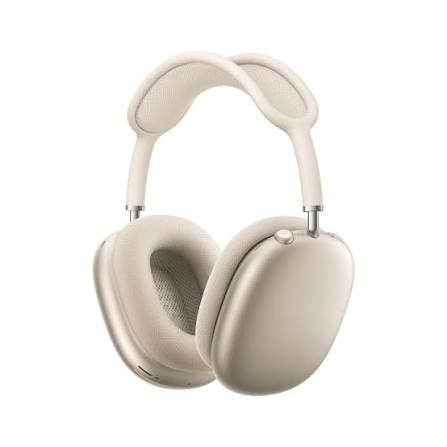

Apple annonce aujourd’hui l’arrivée des AirPods Max, un casque sans fil innovant qui offre toute la magie des AirPods dans un design circum-auriculaire et avec un son haute fidélité. Doté d’une conception acoustique unique, les AirPods Max intègrent une puce H1 et un logiciel avancé pour utiliser le traitement audio informatique et ainsi offrir une expérience d’écoute unique avec Égalisation adaptative, la Réduction active du bruit, le mode Transparence et l’Audio spatial. Ce casque se décline en cinq superbes finitions : gris sidéral, argent, bleu ciel, vert et rose.
| Nom | Prix | Image |
| AirPod Max | 579€ |  |